Anleitung: Populationsgröße schätzen
Für Imker:innen im Rahmen der Datenerhebung
Ziel: Erhebung von Daten zur Schätzung der Volksstärke Ihrer Bienenvölker.
Grundprinzip: Die Stärke der Bienenvölker wird mit zwei unterschiedlichen Methoden erfasst:
- der vereinfachten Liebefelder Schätzmethode
- der Frame-Top-Clusterzählung
Vielen Dank für Ihre Unterstützung!
hanna.bliem@student.uibk.ac.at
1. Zeitplan & Datenübermittlung
Zeitplan
Die Populationsgröße wird vor dem Einwintern und beim Auswintern mit beiden Methoden (Liebefelder Schätzmethode und Frame-Top-Clusterzählung) erfasst. Ein weiteres Mal wird die Frame-Top-Clusterzählung im Winter (Januar oder Februar) bei nicht allzu kalten Temperaturen durchgeführt.
Datenübermittlung
Die erhobenen Daten können Sie uns auf zwei Wegen übermitteln:
- Händisch in das Formular „Schätzprotokoll“ (PDF zum Ausdrucken) und anschließend per E-Mail an hanna.bliem@student.uibk.ac.at
- über das Google-Formular (wie beim Fragebogen): Google-Formular öffnen
2. Vorbereitung
Liebefelder Schätzmethode
Material zusammenstellen:
- Leeres Rähmchen im verwendeten Wabenmaß
- Vier Gummibänder oder Schnüre
- Schätzprotokoll (liegt in den Anlagen bei oder steht im Google-Formular zur Verfügung, Link siehe Kapitel 1). Schätzprotokoll als PDF
- Für den Magazinablauf: zwei Leerzargen (im Herbst: die mit Sensoren präparierten Zargen!), passender Deckel, Trennfolien
Schätzrahmen bauen
Rähmchen teilen
Rähmchen in acht gleich große Felder teilen: Ein Band halbiert die Höhe, drei weitere Bänder vierteln die Breite (siehe Abbildung).
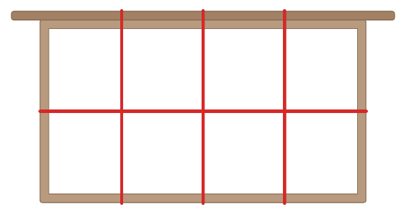
Abstände vermessen
Abstände der Schnüre exakt nach Rahmentyp vermessen (siehe Tabelle unten).
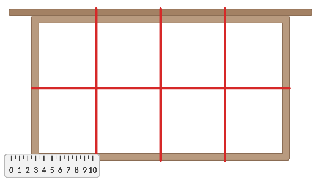
| Rahmentyp | Horizontale Trennlinie (1) | Vertikale Trennlinie (3) |
|---|---|---|
| Zander Jumbo | 163 mm | 140 mm |
| Universal Einheitsmaß (EHM) | 111,5 mm | 123,3 mm |
| Dadant Blatt | 150 mm | 145 mm |
| Dadant US | 142,5 mm | 149,3 mm |
| Langstroth | 116 mm | 149,3 mm |
| Liebig | 110 mm | 159 mm |
Zeitpunkt und Licht wählen
Wählen Sie einen Zeitpunkt mit guten Lichtverhältnissen und passender Witterung.
Frame-Top-Clusterzählung
Smartphone vorbereiten
Für diese Methode benötigen wir ein möglichst gerades und unverzerrtes Foto. Damit Sie das Smartphone beim Fotografieren exakt waagerecht halten können, haben wir Ihnen eine kleine Kreislibelle in das Paket gelegt.
- Legen Sie die Kreislibelle flach auf das Display des Smartphones.
- Richten Sie das Smartphone so aus, dass sich die Luftblase genau innerhalb der Kreismarkierung befindet.
- Lösen Sie erst dann aus – nicht früher.
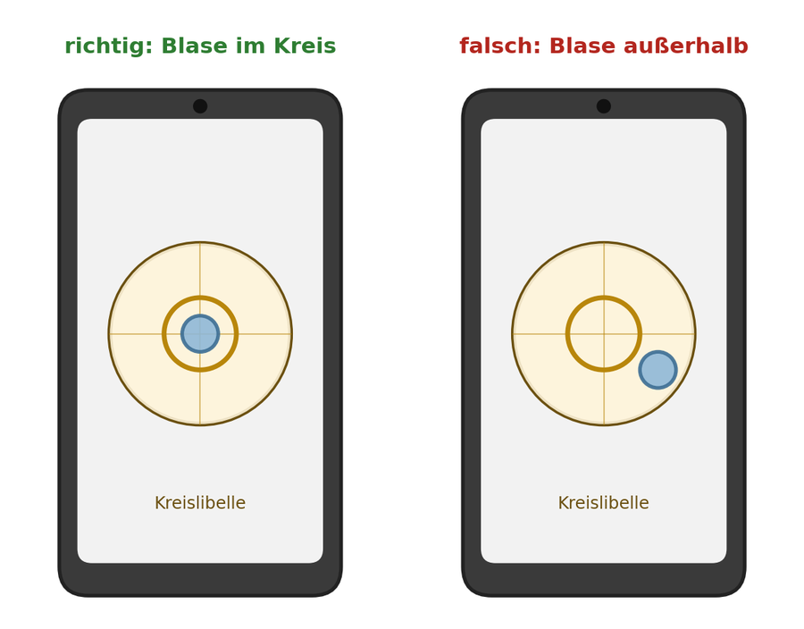
Weiteres Material bereitlegen
- Kreislibelle (liegt dem Paket bei)
- 2x Meterstab oder Maßband
- 1 Münze
3. Durchführung
Frame-Top-Clusterzählung
Maßband und Münze
Deckel der Beute öffnen und Maßband/Meterstab an die obere Kante legen. Bei isolierten Bienenbeuten zusätzlich die Münze an die Kante legen (so lassen sich die beiden Beutentypen unterscheiden).
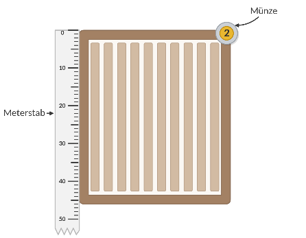
Foto aus 80 cm
Kamera 80 cm über die Beute halten (bitte genau ausmessen). Darauf achten, dass Kamera/Smartphone möglichst gerade ist und die Wasserwaage der Kamera-App richtig ausgerichtet ist.
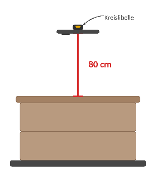
Kontrollieren und senden
Kontrollieren, ob das Foto gelungen ist, und anschließend per E-Mail absenden oder im Google-Formular hochladen.
Liebefelder Schätzmethode
Grundsätzliche Erklärung: Mithilfe des vorher angefertigten Schätzrahmens wird bestimmt, wie viele Bienen auf einer Wabe sitzen. Dabei wird der Schätzrahmen über die Wabe gehalten und notiert, wie viele der Achtel vollständig durch Bienen besetzt sind. Es wird also nicht die tatsächliche Anzahl der Bienen geschätzt, sondern die Anzahl der vollbesetzten Felder.
- Stellen Sie sich locker verteilte Bienen dicht nebeneinander vor und notieren Sie, wie viele Achtel sie dann füllen würden. Zählen Sie nicht einfach jedes Feld, in dem irgendeine Biene sitzt. Beispiele dazu: siehe Kapitel 4.
- Auch halbe Felder sind erlaubt und werden zusammengerechnet.
- Mehrere Schichten: Fläche und Schichtzahl getrennt schätzen (z. B. 2 Achtel × 3 Schichten = 6 Achtel). Diese Korrektur gilt nur für die jeweilige Gruppe.
Dauer: ca. 15 Minuten pro Volk
Ablauf:
Sicheren Abstellplatz schaffen
Eine Leerzarge seitlich hinter dem Volk als Podest aufstellen und einen umgedrehten Deckel darauflegen. Zarge mit Bienen auf den Abstellplatz stellen.
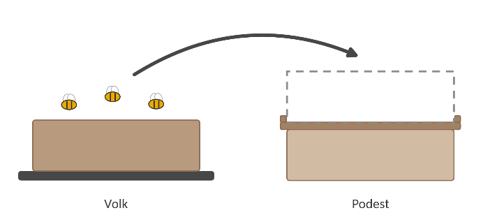
Leerzarge an den ursprünglichen Platz stellen
Im Herbst dabei unbedingt die Zargen verwenden, in denen die Sensoren angebracht wurden. In dieser Zarge wird das Volk nach dem Schätzen Wabe für Wabe wieder aufgebaut.
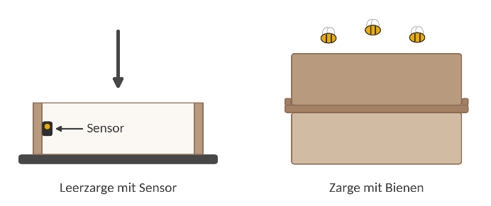
Schätzen
Randwabe zuerst ziehen, den Schätzrahmen darüberhalten und die A- und B-Seite (Vorder- und Rückseite) schätzen. Die geschätzte Anzahl vollbesetzter Achtel in das Schätzprotokoll eintragen. Beim Auswintern zusätzlich die Brut schätzen: zuerst die aufsitzenden Bienen schätzen, diese abschütteln und dann die Brut schätzen.
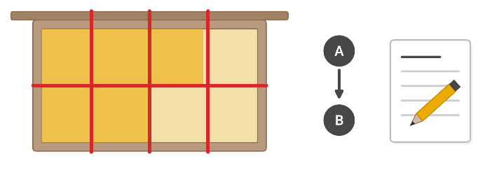
Waben wieder einsetzen
Geschätzte Wabe in ursprünglicher Reihenfolge zurückhängen. Vor dem Weiterarbeiten die Bienen an den Wänden der geleerten Zarge erfassen.
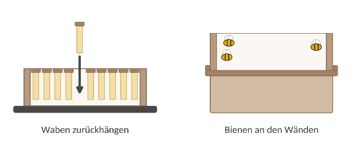
Volk schließen und übermitteln
Nachdem alle Waben und die Bienen an den Wänden geschätzt wurden, das Volk wieder schließen. Anschließend das Schätzprotokoll übermitteln.
4. Beispiele
Liebefelder Schätzmethode
Was zählt als besetzte Fläche?
- Ein Achtel gilt als besetzt, wenn die Bienen dicht an dicht sitzen (bei einem Achtel einer Zanderwabe entspricht das rund 125 Bienen bzw. 400 Arbeiterinnenbrutzellen).
- Locker über die Wabe verteilte Bienen oder einzelne Häufchen denken Sie sich im Kopf zusammengeschoben.
- Sitzen die Bienen in mehreren Schichten übereinander, wird die Achtelzahl mit der Schichtzahl multipliziert (z. B. 3 Schichten: 3 × Achtelzahl).
Hier einige Beispiel-Schätzungen aus der Schweizer Bienenzeitung (Aumeier, 2021):
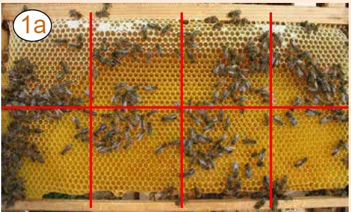
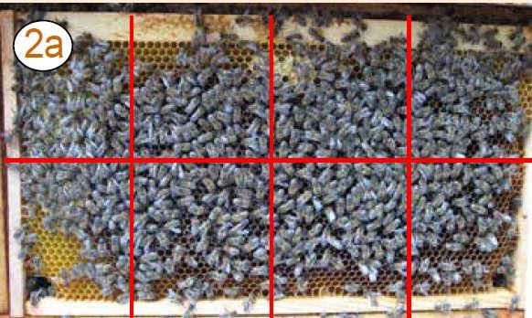
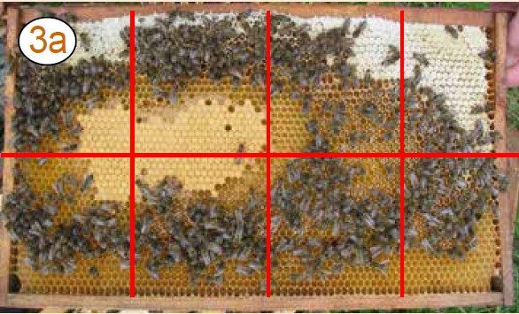
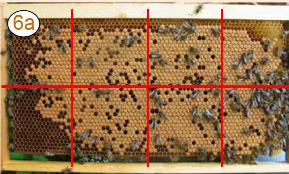
Rote Linien: Schätzraster mit acht Feldern, wie es auch Ihr Schätzrahmen zeigt. Die Bezeichnungen (1a, 2a, 3a, 6a) stammen aus der Originalquelle (Aumeier, 2021). Zum Vergrößern antippen.
Literaturverzeichnis
Aumeier, P. (2021). Zählen statt raten. Schweizer Bienen-Zeitung, 144(4), 20–24. ISSN 0036-7540
Projekt „Testung isolierter Bienenbeuten“ · Institut für Zoologie, Universität Innsbruck · hanna.bliem@student.uibk.ac.at